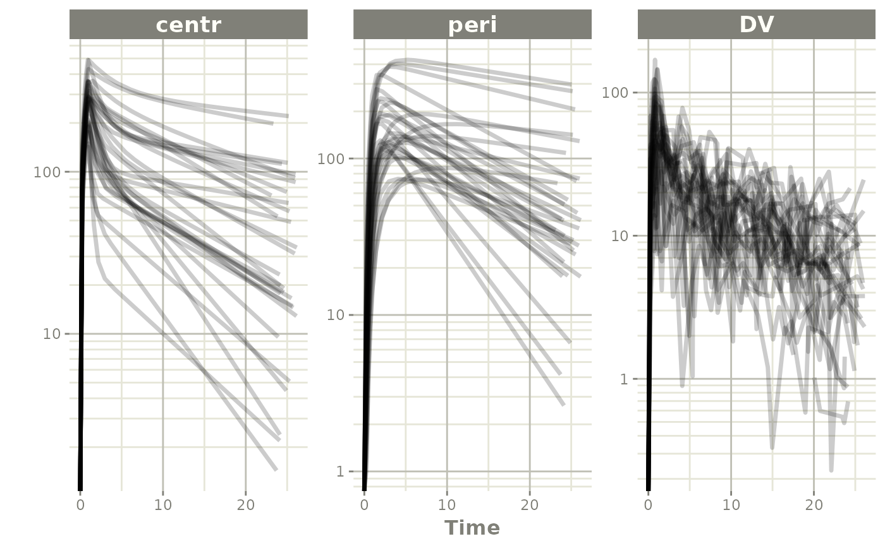

This is an example model for weight based dosing of daptomycin. Daptomycin is a cyclic lipopeptide antibiotic from fermented Streptomyces roseosporus.
There are 3 stages for weight-based dosing simulations: - Create rxode2 model - Simulate Covariates - Create event table with weight-based dosing (merged back to covariates)
Creating a 2-compartment model in rxode2
#> rxode2 4.0.2 using 2 threads (see ?getRxThreads)
#> no cache: create with `rxCreateCache()`
## Note the time covariate is not included in the simulation
m1 <- function() {
model({
CL ~ (1-0.2*SEX)*(0.807+0.00514*(CRCL-91.2))*exp(eta.cl)
V1 ~ 4.8*exp(eta.v1)
Q ~ (3.46+0.0593*(WT-75.1))*exp(eta.q);
V2 ~ 1.93*(3.13+0.0458*(WT-75.1))*exp(eta.v2)
A1 ~ centr;
A2 ~ peri;
d/dt(centr) <- - A1*(CL/V1 + Q/V1) + A2*Q/V2;
d/dt(peri) <- A1*Q/V1 - A2*Q/V2;
DV = centr / V1 * (1 + prop.err)
})
}Simulating Covariates
This simulation correlates age, sex, and weight. Since we will be using weight based dosing, this needs to be simulated first
#>
#> Attaching package: 'dplyr'#> The following objects are masked from 'package:stats':
#>
#> filter, lag#> The following objects are masked from 'package:base':
#>
#> intersect, setdiff, setequal, union
nsub=30
# Simulate Weight based on age and gender
AGE<-round(runif(nsub,min=18,max=70))
SEX<-round(runif(nsub,min=0,max=1))
HTm<-round(rnorm(nsub,176.3,0.17*sqrt(4482)),digits=1)
HTf<-round(rnorm(nsub,162.2,0.16*sqrt(4857)),digits=1)
WTm<-round(exp(3.28+1.92*log(HTm/100))*exp(rnorm(nsub,0,0.14)),digits=1)
WTf<-round(exp(3.49+1.45*log(HTf/100))*exp(rnorm(nsub,0,0.17)),digits=1)
WT<-ifelse(SEX==1,WTf,WTm)
CRCL<-round(runif(nsub,30,140))
## id is in lower case to match the event table
cov.df <- tibble(id=seq_along(AGE), AGE=AGE, SEX=SEX, WT=WT, CRCL=CRCL)
print(cov.df)#> # A tibble: 30 x 5
#> id AGE SEX WT CRCL
#> <int> <dbl> <dbl> <dbl> <dbl>
#> 1 1 66 1 49.4 83
#> 2 2 67 1 52.5 79
#> 3 3 33 0 97.9 37
#> 4 4 61 1 63.8 66
#> 5 5 51 0 71.8 127
#> 6 6 45 1 69.6 132
#> 7 7 56 0 61 73
#> 8 8 25 0 57.7 47
#> 9 9 52 1 58.7 65
#> 10 10 55 1 73.1 64
#> # i 20 more rowsCreating weight based event table
s<-c(0,0.25,0.5,0.75,1,1.5,seq(2,24,by=1))
s <- lapply(s, function(x){.x <- 0.1 * x; c(x - .x, x + .x)})
e <- et() %>%
## Specify the id and weight based dosing from covariate data.frame
## This requires rxode2 XXX
et(id=cov.df$id, amt=6*cov.df$WT, rate=6 * cov.df$WT) %>%
## Sampling is added for each ID
et(s) %>%
as.data.frame %>%
## Merge the event table with the covarite information
merge(cov.df, by="id") %>%
as_tibble
e#> # A tibble: 900 x 12
#> id low time high cmt amt rate evid AGE SEX WT CRCL
#> <int> <dbl> <dbl> <dbl> <chr> <dbl> <dbl> <int> <dbl> <dbl> <dbl> <dbl>
#> 1 1 0 0 0 (obs) NA NA 0 66 1 49.4 83
#> 2 1 NA 0 NA (default) 296. 296. 1 66 1 49.4 83
#> 3 1 0.225 0.247 0.275 (obs) NA NA 0 66 1 49.4 83
#> 4 1 0.45 0.520 0.55 (obs) NA NA 0 66 1 49.4 83
#> 5 1 0.675 0.701 0.825 (obs) NA NA 0 66 1 49.4 83
#> 6 1 0.9 0.948 1.1 (obs) NA NA 0 66 1 49.4 83
#> 7 1 1.35 1.36 1.65 (obs) NA NA 0 66 1 49.4 83
#> 8 1 1.8 1.93 2.2 (obs) NA NA 0 66 1 49.4 83
#> 9 1 2.7 2.95 3.3 (obs) NA NA 0 66 1 49.4 83
#> 10 1 3.6 3.69 4.4 (obs) NA NA 0 66 1 49.4 83
#> # i 890 more rowsSolving Daptomycin simulation
data <- rxSolve(m1, e,
## Lotri uses lower-triangular matrix rep. for named matrix
omega=lotri(eta.cl ~ .306,
eta.q ~0.0652,
eta.v1 ~.567,
eta.v2 ~ .191),
sigma=lotri(prop.err ~ 0.15),
addDosing = TRUE, addCov = TRUE)#> i parameter labels from comments are typically ignored in non-interactive mode#> i Need to run with the source intact to parse comments#> C model:
#> // Define translation state order for 2 states
#> #define __DDT0__ 0 // centr
#> #define __DDT1__ 1 // peri
#> // Define 1 LHS values
#> #define _LHS_0_ 0 // DV
#> #define _getRxSolve_ _rxdedcc5ee87dfa8b891328babb70727b80__getRxSolve__4gqr
#> #define _evalUdf _rxdedcc5ee87dfa8b891328babb70727b81__evalUdf_50Qy
#> #define _solveData _rxdedcc5ee87dfa8b891328babb70727b82__solveData_UzU7
#> #define _assign_ptr _rxdedcc5ee87dfa8b891328babb70727b83__assign_ptr_YEim
#> #define _rxRmModelLib _rxdedcc5ee87dfa8b891328babb70727b84__rxRmModelLib_RTOt
#> #define _rxGetModelLib _rxdedcc5ee87dfa8b891328babb70727b85__rxGetModelLib_YgK5
#> #define _old_c _rxdedcc5ee87dfa8b891328babb70727b86__old_c_wf07
#> #define _ptrid _rxdedcc5ee87dfa8b891328babb70727b87__ptrid_qROQ
#> #define _rxIsCurrentC _rxdedcc5ee87dfa8b891328babb70727b88__rxIsCurrentC_fBpu
#> #define _sumPS _rxdedcc5ee87dfa8b891328babb70727b89__sumPS_nVFf
#> #define _prodPS _rxdedcc5ee87dfa8b891328babb70727b810__prodPS_wy3N
#> #define _prodType _rxdedcc5ee87dfa8b891328babb70727b811__prodType_nXIO
#> #define _sumType _rxdedcc5ee87dfa8b891328babb70727b812__sumType_1q1e
#> #define _update_par_ptr _rxdedcc5ee87dfa8b891328babb70727b813__update_par_ptr_bJzp
#> #define _getParCov _rxdedcc5ee87dfa8b891328babb70727b814__getParCov_b8rZ
#> #define _rxode2_rxAssignPtr _rxdedcc5ee87dfa8b891328babb70727b815__rxode2_rxAssignPtr_n1Fk
#> #define _rxQr _rxdedcc5ee87dfa8b891328babb70727b816__rxQr_pWdU
#> #define _compareFactorVal _rxdedcc5ee87dfa8b891328babb70727b817__compareFactorVal_a6qO
#> #define _sum _rxdedcc5ee87dfa8b891328babb70727b818__sum_lwGp
#> #define _udf _rxdedcc5ee87dfa8b891328babb70727b819__udf_enBk
#> #define _sign _rxdedcc5ee87dfa8b891328babb70727b820__sign_jkK3
#> #define _prod _rxdedcc5ee87dfa8b891328babb70727b821__prod_f2dI
#> #define _max _rxdedcc5ee87dfa8b891328babb70727b822__max_Ovgi
#> #define _min _rxdedcc5ee87dfa8b891328babb70727b823__min_iEPZ
#> #define _transit4P _rxdedcc5ee87dfa8b891328babb70727b824__transit4P_sauL
#> #define _transit3P _rxdedcc5ee87dfa8b891328babb70727b825__transit3P_FiDR
#> #define _assignFuns0 _rxdedcc5ee87dfa8b891328babb70727b826__assignFuns0_hfBj
#> #define _assignFuns _rxdedcc5ee87dfa8b891328babb70727b827__assignFuns_KLmM
#> #define _rxord _rxdedcc5ee87dfa8b891328babb70727b828__rxord_HG1e
#> #define __assignFuns2 _rxdedcc5ee87dfa8b891328babb70727b829___assignFuns2_kd3W
#> #define _llikCauchyDscale _rxdedcc5ee87dfa8b891328babb70727b830__llikCauchyDscale_5G0h
#> #define _llikCauchyDlocation _rxdedcc5ee87dfa8b891328babb70727b831__llikCauchyDlocation_n8bM
#> #define _llikCauchy _rxdedcc5ee87dfa8b891328babb70727b832__llikCauchy_gMnz
#> #define _llikGammaDrate _rxdedcc5ee87dfa8b891328babb70727b833__llikGammaDrate_T48t
#> #define _llikGammaDshape _rxdedcc5ee87dfa8b891328babb70727b834__llikGammaDshape_isuT
#> #define _llikGamma _rxdedcc5ee87dfa8b891328babb70727b835__llikGamma_4iGK
#> #define _llikWeibullDscale _rxdedcc5ee87dfa8b891328babb70727b836__llikWeibullDscale_NK6a
#> #define _llikWeibullDshape _rxdedcc5ee87dfa8b891328babb70727b837__llikWeibullDshape_kWHR
#> #define _llikWeibull _rxdedcc5ee87dfa8b891328babb70727b838__llikWeibull_tvWl
#> #define _llikUnifDbeta _rxdedcc5ee87dfa8b891328babb70727b839__llikUnifDbeta_lpwQ
#> #define _llikUnifDalpha _rxdedcc5ee87dfa8b891328babb70727b840__llikUnifDalpha_bDrv
#> #define _llikUnif _rxdedcc5ee87dfa8b891328babb70727b841__llikUnif_ae4F
#> #define _llikGeomDp _rxdedcc5ee87dfa8b891328babb70727b842__llikGeomDp_VVlG
#> #define _llikGeom _rxdedcc5ee87dfa8b891328babb70727b843__llikGeom_gYQr
#> #define _llikFDdf2 _rxdedcc5ee87dfa8b891328babb70727b844__llikFDdf2_6JjX
#> #define _llikFDdf1 _rxdedcc5ee87dfa8b891328babb70727b845__llikFDdf1_Bg6H
#> #define _llikF _rxdedcc5ee87dfa8b891328babb70727b846__llikF_i26P
#> #define _llikExpDrate _rxdedcc5ee87dfa8b891328babb70727b847__llikExpDrate_aCVp
#> #define _llikExp _rxdedcc5ee87dfa8b891328babb70727b848__llikExp_5TsR
#> #define _llikChisqDdf _rxdedcc5ee87dfa8b891328babb70727b849__llikChisqDdf_H3s9
#> #define _llikChisq _rxdedcc5ee87dfa8b891328babb70727b850__llikChisq_JgHQ
#> #define _llikTDsd _rxdedcc5ee87dfa8b891328babb70727b851__llikTDsd_UEM4
#> #define _llikTDmean _rxdedcc5ee87dfa8b891328babb70727b852__llikTDmean_MyBs
#> #define _llikTDdf _rxdedcc5ee87dfa8b891328babb70727b853__llikTDdf_6CjG
#> #define _llikT _rxdedcc5ee87dfa8b891328babb70727b854__llikT_Da5T
#> #define _llikBetaDshape2 _rxdedcc5ee87dfa8b891328babb70727b855__llikBetaDshape2_ItDW
#> #define _llikBetaDshape1 _rxdedcc5ee87dfa8b891328babb70727b856__llikBetaDshape1_0WN0
#> #define _llikBeta _rxdedcc5ee87dfa8b891328babb70727b857__llikBeta_ZRc3
#> #define _llikNbinomMuDmu _rxdedcc5ee87dfa8b891328babb70727b858__llikNbinomMuDmu_eK9D
#> #define _llikNbinomMu _rxdedcc5ee87dfa8b891328babb70727b859__llikNbinomMu_Nf9P
#> #define _llikNbinomDprob _rxdedcc5ee87dfa8b891328babb70727b860__llikNbinomDprob_GL7I
#> #define _llikNbinom _rxdedcc5ee87dfa8b891328babb70727b861__llikNbinom_8Sj3
#> #define _llikBinomDprob _rxdedcc5ee87dfa8b891328babb70727b862__llikBinomDprob_OqOS
#> #define _llikBinom _rxdedcc5ee87dfa8b891328babb70727b863__llikBinom_xmTz
#> #define _llikPoisDlambda _rxdedcc5ee87dfa8b891328babb70727b864__llikPoisDlambda_IBlr
#> #define _llikPois _rxdedcc5ee87dfa8b891328babb70727b865__llikPois_Juuo
#> #define _llikNormDsd _rxdedcc5ee87dfa8b891328babb70727b866__llikNormDsd_LfGx
#> #define _llikNormDmean _rxdedcc5ee87dfa8b891328babb70727b867__llikNormDmean_7KcE
#> #define _llikNorm _rxdedcc5ee87dfa8b891328babb70727b868__llikNorm_vaMb
#> #define simeps _rxdedcc5ee87dfa8b891328babb70727b869_simeps_bsdr
#> #define simeta _rxdedcc5ee87dfa8b891328babb70727b870_simeta_vZkO
#> #define expit _rxdedcc5ee87dfa8b891328babb70727b871_expit_8wF1
#> #define logit _rxdedcc5ee87dfa8b891328babb70727b872_logit_EEYf
#> #define gammapDer _rxdedcc5ee87dfa8b891328babb70727b873_gammapDer_U7dc
#> #define lowergamma _rxdedcc5ee87dfa8b891328babb70727b874_lowergamma_FELJ
#> #define uppergamma _rxdedcc5ee87dfa8b891328babb70727b875_uppergamma_lESp
#> #define gammaqInva _rxdedcc5ee87dfa8b891328babb70727b876_gammaqInva_FSpK
#> #define gammaqInv _rxdedcc5ee87dfa8b891328babb70727b877_gammaqInv_VlBz
#> #define gammapInva _rxdedcc5ee87dfa8b891328babb70727b878_gammapInva_xW7Y
#> #define gammapInv _rxdedcc5ee87dfa8b891328babb70727b879_gammapInv_2x0Z
#> #define gammaq _rxdedcc5ee87dfa8b891328babb70727b880_gammaq_kBIR
#> #define gammap _rxdedcc5ee87dfa8b891328babb70727b881_gammap_Oecj
#> #define phi _rxdedcc5ee87dfa8b891328babb70727b882_phi_J83x
#> #define d2ELUa _rxdedcc5ee87dfa8b891328babb70727b883_d2ELUa_1vMh
#> #define dELUa _rxdedcc5ee87dfa8b891328babb70727b884_dELUa_ZH0Q
#> #define d2aELU _rxdedcc5ee87dfa8b891328babb70727b885_d2aELU_c0f7
#> #define d2ELU _rxdedcc5ee87dfa8b891328babb70727b886_d2ELU_t6ZF
#> #define dELU _rxdedcc5ee87dfa8b891328babb70727b887_dELU_axjP
#> #define ELU _rxdedcc5ee87dfa8b891328babb70727b888_ELU_UfTI
#> #define dPReLUa1 _rxdedcc5ee87dfa8b891328babb70727b889_dPReLUa1_Xjlo
#> #define dPReLUa _rxdedcc5ee87dfa8b891328babb70727b890_dPReLUa_KtJh
#> #define dPReLU _rxdedcc5ee87dfa8b891328babb70727b891_dPReLU_ByAA
#> #define PReLU _rxdedcc5ee87dfa8b891328babb70727b892_PReLU_cjwl
#> #define dSwish _rxdedcc5ee87dfa8b891328babb70727b893_dSwish_AHQp
#> #define Swish _rxdedcc5ee87dfa8b891328babb70727b894_Swish_9fof
#> #define dlReLU _rxdedcc5ee87dfa8b891328babb70727b895_dlReLU_NsZT
#> #define lReLU _rxdedcc5ee87dfa8b891328babb70727b896_lReLU_dj9P
#> #define dSELU _rxdedcc5ee87dfa8b891328babb70727b897_dSELU_SYPz
#> #define SELU _rxdedcc5ee87dfa8b891328babb70727b898_SELU_kB6k
#> #define d4softplus _rxdedcc5ee87dfa8b891328babb70727b899_d4softplus_7zmP
#> #define d3softplus _rxdedcc5ee87dfa8b891328babb70727b8100_d3softplus_HxF7
#> #define d2softplus _rxdedcc5ee87dfa8b891328babb70727b8101_d2softplus_XfN9
#> #define dsoftplus _rxdedcc5ee87dfa8b891328babb70727b8102_dsoftplus_y4bC
#> #define softplus _rxdedcc5ee87dfa8b891328babb70727b8103_softplus_Y9pK
#> #define d4GELU _rxdedcc5ee87dfa8b891328babb70727b8104_d4GELU_TBWU
#> #define d3GELU _rxdedcc5ee87dfa8b891328babb70727b8105_d3GELU_8k0B
#> #define d2GELU _rxdedcc5ee87dfa8b891328babb70727b8106_d2GELU_7XX1
#> #define dGELU _rxdedcc5ee87dfa8b891328babb70727b8107_dGELU_9Ykf
#> #define GELU _rxdedcc5ee87dfa8b891328babb70727b8108_GELU_l8ah
#> #define dReLU _rxdedcc5ee87dfa8b891328babb70727b8109_dReLU_Qz5Y
#> #define ReLU _rxdedcc5ee87dfa8b891328babb70727b8110_ReLU_NOKz
#> #define riweibull _rxdedcc5ee87dfa8b891328babb70727b8111_riweibull_kmuf
#> #define riunif _rxdedcc5ee87dfa8b891328babb70727b8112_riunif_gw8w
#> #define rit_ _rxdedcc5ee87dfa8b891328babb70727b8113_rit__x5qk
#> #define ripois _rxdedcc5ee87dfa8b891328babb70727b8114_ripois_aI0K
#> #define ribeta _rxdedcc5ee87dfa8b891328babb70727b8115_ribeta_ADT0
#> #define rigamma _rxdedcc5ee87dfa8b891328babb70727b8116_rigamma_mn7C
#> #define rigeom _rxdedcc5ee87dfa8b891328babb70727b8117_rigeom_zu0i
#> #define rif _rxdedcc5ee87dfa8b891328babb70727b8118_rif_P1OB
#> #define riexp _rxdedcc5ee87dfa8b891328babb70727b8119_riexp_FuNI
#> #define richisq _rxdedcc5ee87dfa8b891328babb70727b8120_richisq_l0Bz
#> #define ricauchy _rxdedcc5ee87dfa8b891328babb70727b8121_ricauchy_1iXO
#> #define rinbinomMu _rxdedcc5ee87dfa8b891328babb70727b8122_rinbinomMu_UzUy
#> #define rinbinom _rxdedcc5ee87dfa8b891328babb70727b8123_rinbinom_kgU3
#> #define ribinom _rxdedcc5ee87dfa8b891328babb70727b8124_ribinom_mL1c
#> #define rinorm _rxdedcc5ee87dfa8b891328babb70727b8125_rinorm_8BdA
#> #define rxweibull _rxdedcc5ee87dfa8b891328babb70727b8126_rxweibull_MDp0
#> #define rxunif _rxdedcc5ee87dfa8b891328babb70727b8127_rxunif_9wlo
#> #define rxt_ _rxdedcc5ee87dfa8b891328babb70727b8128_rxt__F78Q
#> #define rxpois _rxdedcc5ee87dfa8b891328babb70727b8129_rxpois_M8Wk
#> #define rxbeta _rxdedcc5ee87dfa8b891328babb70727b8130_rxbeta_6MDt
#> #define rxgamma _rxdedcc5ee87dfa8b891328babb70727b8131_rxgamma_6qq1
#> #define rxgeom _rxdedcc5ee87dfa8b891328babb70727b8132_rxgeom_lH96
#> #define rxf _rxdedcc5ee87dfa8b891328babb70727b8133_rxf_iSOc
#> #define rxexp _rxdedcc5ee87dfa8b891328babb70727b8134_rxexp_84fn
#> #define rxchisq _rxdedcc5ee87dfa8b891328babb70727b8135_rxchisq_Nnor
#> #define rxcauchy _rxdedcc5ee87dfa8b891328babb70727b8136_rxcauchy_Q5sH
#> #define rxnbinomMu _rxdedcc5ee87dfa8b891328babb70727b8137_rxnbinomMu_Ioaf
#> #define rxnbinom _rxdedcc5ee87dfa8b891328babb70727b8138_rxnbinom_dEbU
#> #define rxbinom _rxdedcc5ee87dfa8b891328babb70727b8139_rxbinom_ZoU5
#> #define rxnorm _rxdedcc5ee87dfa8b891328babb70727b8140_rxnorm_Sbu2
#> #define linCmtB _rxdedcc5ee87dfa8b891328babb70727b8141_linCmtB_o5Gq
#> #define linCmtA _rxdedcc5ee87dfa8b891328babb70727b8142_linCmtA_u5Y2
#> #include <rxode2_model_shared.h>
#> #define __MAX_PROD__ 0
#> #define _CMT CMT
#> #define _SYNC_simeps_ for (int _svari=_solveData->neps; _svari--;){ if (_solveData->svar[_svari] == 0) {SEX = _PP[0];}; if (_solveData->svar[_svari] == 1) {CRCL = _PP[1];}; if (_solveData->svar[_svari] == 2) {eta_DoT_cl = _PP[2];}; if (_solveData->svar[_svari] == 3) {eta_DoT_v1 = _PP[3];}; if (_solveData->svar[_svari] == 4) {WT = _PP[4];}; if (_solveData->svar[_svari] == 5) {eta_DoT_q = _PP[5];}; if (_solveData->svar[_svari] == 6) {eta_DoT_v2 = _PP[6];}; if (_solveData->svar[_svari] == 7) {prop_DoT_err = _PP[7];}; }
#> #define _SYNC_simeta_ for (int _ovari=_solveData->neta; _ovari--;){ if (_solveData->ovar[_ovari] == 0) {SEX = _PP[0];}; if (_solveData->ovar[_ovari] == 1) {CRCL = _PP[1];}; if (_solveData->ovar[_ovari] == 2) {eta_DoT_cl = _PP[2];}; if (_solveData->ovar[_ovari] == 3) {eta_DoT_v1 = _PP[3];}; if (_solveData->ovar[_ovari] == 4) {WT = _PP[4];}; if (_solveData->ovar[_ovari] == 5) {eta_DoT_q = _PP[5];}; if (_solveData->ovar[_ovari] == 6) {eta_DoT_v2 = _PP[6];}; if (_solveData->ovar[_ovari] == 7) {prop_DoT_err = _PP[7];}; }
#> _getRxSolve_t _getRxSolve_;
#> _simfun simeps;
#> _simfun simeta;
#> _udf_type _evalUdf=NULL;
#> rx_solve *_solveData=NULL;
#> rxode2_assign_ptr _assign_ptr=NULL;
#> _rxRmModelLibType _rxRmModelLib=NULL;
#> _rxGetModelLibType _rxGetModelLib=NULL;
#> rxode2_ode_solver_old_c _old_c=NULL;
#> rxode2_fn0i _ptrid=NULL;
#> _rxIsCurrentC_type _rxIsCurrentC=NULL;
#> _rxSumType _sumPS=NULL;
#> _rxProdType _prodPS=NULL;
#> rxode2_fn0i _prodType=NULL;
#> rxode2_fn0i _sumType=NULL;
#> _update_par_ptr_p _update_par_ptr=NULL;
#> _getParCov_p _getParCov=NULL;
#> linCmtA_p linCmtA;
#> linCmtB_p linCmtB;
#> _rx_asgn _rxode2_rxAssignPtr=NULL;
#> _rx_asgn _rxQr=NULL;
#> rxode2_fn phi;
#> rxode2_fn ReLU;
#> rxode2_fn dReLU;
#> rxode2_fn GELU;
#> rxode2_fn dGELU;
#> rxode2_fn d2GELU;
#> rxode2_fn d3GELU;
#> rxode2_fn d4GELU;
#> rxode2_fn softplus;
#> rxode2_fn dsoftplus;
#> rxode2_fn d2softplus;
#> rxode2_fn d3softplus;
#> rxode2_fn d4softplus;
#> rxode2_fn SELU;
#> rxode2_fn dSELU;
#> rxode2_fn lReLU;
#> rxode2_fn dlReLU;
#> rxode2_fn Swish;
#> rxode2_fn dSwish;
#> rxode2_fn2 PReLU;
#> rxode2_fn2 dPReLU;
#> rxode2_fn2 dPReLUa;
#> rxode2_fn2 dPReLUa1;
#> rxode2_fn2 ELU;
#> rxode2_fn2 dELU;
#> rxode2_fn2 d2ELU;
#> rxode2_fn2 d2aELU;
#> rxode2_fn2 dELUa;
#> rxode2_fn2 d2ELUa;
#> rxode2_fn3 logit;
#> rxode2_fn3 expit;
#> rxode2_fn2 gammap;
#> rxode2_fn2 gammaq;
#> rxode2_fn2 lowergamma;
#> rxode2_fn2 uppergamma;
#> rxode2_fn2 gammapInv;
#> rxode2_fn2 gammapDer;
#> rxode2_fn2 gammapInva;
#> rxode2_fn2 gammaqInv;
#> rxode2_fn2 gammaqInva;
#> rxode2i_fn2 rxnorm;
#> rxode2i_rxbinom rxbinom;
#> rxode2i_rxbinom rxnbinom;
#> rxode2i_rxbinom rxnbinomMu;
#> rxode2i_fn2 rxcauchy;
#> rxode2i_fn rxchisq;
#> rxode2i_fn rxexp;
#> rxode2i_fn2 rxf;
#> rxode2i_ifn rxgeom;
#> rxode2i_fn2 rxgamma;
#> rxode2i_fn2 rxbeta;
#> rxode2i_ifn rxpois;
#> rxode2i_fn rxt_;
#> rxode2i_fn2 rxunif;
#> rxode2i_fn2 rxweibull;
#> rxode2i2_fn2 rinorm;
#> rxode2i2_ribinom ribinom;
#> rxode2i2_ribinom rinbinom;
#> rxode2i2_ribinom rinbinomMu;
#> rxode2i2_fn2 ricauchy;
#> rxode2i2_fn richisq;
#> rxode2i2_fn riexp;
#> rxode2i2_fn2 rif;
#> rxode2i2_ifn rigeom;
#> rxode2i2_fn2 rigamma;
#> rxode2i2_fn2 ribeta;
#> rxode2i2_ifn ripois;
#> rxode2i2_fn rit_;
#> rxode2i2_fn2 riunif;
#> rxode2i2_fn2 riweibull;
#> rxode2_llikNormFun _llikNorm;
#> rxode2_llikNormFun _llikNormDmean;
#> rxode2_llikNormFun _llikNormDsd;
#> rxode2_llikPoisFun _llikPois;
#> rxode2_llikPoisFun _llikPoisDlambda;
#> rxode2_llikBinomFun _llikBinom;
#> rxode2_llikBinomFun _llikBinomDprob;
#> rxode2_llikBinomFun _llikNbinom;
#> rxode2_llikBinomFun _llikNbinomDprob;
#> rxode2_llikBinomFun _llikNbinomMu;
#> rxode2_llikBinomFun _llikNbinomMuDmu;
#> rxode2_llikBetaFun _llikBeta;
#> rxode2_llikBetaFun _llikBetaDshape1;
#> rxode2_llikBetaFun _llikBetaDshape2;
#> rxode2_llikTFun _llikT;
#> rxode2_llikTFun _llikTDdf;
#> rxode2_llikTFun _llikTDmean;
#> rxode2_llikTFun _llikTDsd;
#> rxode2_llikChisqFun _llikChisq;
#> rxode2_llikChisqFun _llikChisqDdf;
#> rxode2_llikExpFun _llikExp;
#> rxode2_llikExpFun _llikExpDrate;
#> rxode2_llikFFun _llikF;
#> rxode2_llikFFun _llikFDdf1;
#> rxode2_llikFFun _llikFDdf2;
#> rxode2_llikGeomFun _llikGeom;
#> rxode2_llikGeomFun _llikGeomDp;
#> rxode2_llikUnifFun _llikUnif;
#> rxode2_llikUnifFun _llikUnifDalpha;
#> rxode2_llikUnifFun _llikUnifDbeta;
#> rxode2_llikWeibullFun _llikWeibull;
#> rxode2_llikWeibullFun _llikWeibullDshape;
#> rxode2_llikWeibullFun _llikWeibullDscale;
#> rxode2_llikGammaFun _llikGamma;
#> rxode2_llikGammaFun _llikGammaDshape;
#> rxode2_llikGammaFun _llikGammaDrate;
#> rxode2_llikCauchyFun _llikCauchy;
#> rxode2_llikCauchyFun _llikCauchyDlocation;
#> rxode2_llikCauchyFun _llikCauchyDscale;
#> rxode2_compareFactorVal_fn _compareFactorVal;
#> #include "extraC.h"
#> double _prod(double *input, double *p, int type, int n, ...){
#> va_list valist;
#> va_start(valist, n);
#> for (unsigned int i = 0; i < n; i++){
#> input[i] = va_arg(valist, double);
#> }
#> va_end(valist);
#> return _prodPS(input, p, n, type);
#> }
#> double _udf(const char *funName, double *input, int n, ...) {
#> if (n == -42) Rf_error("%s", "this has a ui user function that cannot be called directly");
#> va_list valist;
#> va_start(valist, n);
#> for (unsigned int i = 0; i < n; i++){
#> input[i] = va_arg(valist, double);
#> }
#> va_end(valist);
#> return _evalUdf(funName, n, input);
#> }
#> double _sum(double *input, double *pld, int m, int type, int n, ...){
#> va_list valist;
#> va_start(valist, n);
#> for (unsigned int i = 0; i < n; i++){
#> input[i] = va_arg(valist, double);
#> }
#> va_end(valist);
#> double ret = _sumPS(input, n, pld, m, type);
#> if (type == 2 && m < 0){
#> for (int i = -m; i--;){
#> pld[i] = 0.0;
#> }
#> }
#> return ret;
#> }
#> double _sign(unsigned int n, ...) {
#> va_list valist;
#> va_start(valist, n);
#> double s = 1;
#> for (unsigned int i = 0; i < n; i++) {
#> s = sign(va_arg(valist, double))*s;
#> if (s == 0){
#> break;
#> }
#> }
#> va_end(valist);
#> return s;
#> }
#> double _rxord(int _cSub, unsigned int n, ...) {
#> rx_solving_options_ind* ind = &(_solveData->subjects[_cSub]);
#> if (!ind->inLhs) {
#> return 1.0;
#> }
#> va_list valist;
#> va_start(valist, n);
#> double ret = 1.0;
#> double p = 0.0;
#> double u = rxunif(ind, 0.0, 1.0);
#> int found = 0;
#> for (unsigned int i = 0; i < n; i++) {
#> p += va_arg(valist, double);
#> if (!found) {
#> if (u < p) {
#> ret = (double)(i+1);
#> found = 1;
#> }
#> }
#> }
#> if (!found) ret =(double)(n+1);
#> va_end(valist);
#> return ret;
#> }
#> double _max(unsigned int n, ...) {
#> va_list valist;
#> va_start(valist, n);
#> double mx = NA_REAL;
#> double tmp = 0;
#> if (n >= 1){
#> mx = va_arg(valist, double);
#> for (unsigned int i = 1; i < n; i++) {
#> tmp = va_arg(valist, double);
#> if (tmp>mx) mx=tmp;
#> }
#> va_end(valist);
#> }
#> return mx;
#> }
#> double _min(unsigned int n, ...){
#> va_list valist;
#> va_start(valist, n);
#> double mn = NA_REAL;
#> double tmp = 0;
#> if (n >= 1){
#> mn = va_arg(valist, double);
#> for (unsigned int i = 1; i < n; i++){
#> tmp = va_arg(valist, double);
#> if (tmp<mn) mn=tmp;
#> }
#> va_end(valist);
#> }
#> return mn;
#> }
#> double _transit4P(int cmt, double t, unsigned int id, double n, double mtt, double bio){
#> double nd = (double) n;
#> double ktr = (nd+1)/mtt;
#> double lktr = _safe_log(nd+1)-_safe_log(mtt);
#> double tlast = _solveData->subjects[id].tlastS[cmt];
#> double dose = _solveData->subjects[id].curDoseS[cmt];
#> if (ISNA(dose)) dose = 0.0;
#> if (ISNA(tlast)) tlast = 0.0;
#> double tad = (t-tlast);
#> return exp(_safe_log(bio*dose)+lktr+n*(lktr+_safe_log(tad))-ktr*(tad)-lgamma1p(nd));
#> }
#> double _transit3P(int cmt, double t, unsigned int id, double n, double mtt){
#> double nd = (double) n;
#> double ktr = (nd+1)/mtt;
#> double lktr = _safe_log(nd+1)-_safe_log(mtt);
#> double tlast = _solveData->subjects[id].tlastS[cmt];
#> if (ISNA(tlast)) tlast = 0.0;
#> double tad = t-tlast;
#> double podo = _solveData->subjects[id].curDoseS[cmt];
#> if (ISNA(podo)) podo = 0.0;
#> return exp(_safe_log(podo)+lktr+n*(lktr+_safe_log(tad))-ktr*(tad)-lgamma1p(nd));
#> }
#> void _assignFuns0(void) {
#> _evalUdf = (_udf_type) R_GetCCallable("rxode2", "_rxode2_evalUdf");
#> _getRxSolve_ = (_getRxSolve_t) R_GetCCallable("rxode2","getRxSolve_");
#> _assign_ptr=(rxode2_assign_ptr) R_GetCCallable("rxode2","rxode2_assign_fn_pointers");
#> _rxRmModelLib=(_rxRmModelLibType) R_GetCCallable("rxode2","rxRmModelLib");
#> _rxGetModelLib=(_rxGetModelLibType) R_GetCCallable("rxode2","rxGetModelLib");
#> _rxode2_rxAssignPtr=(_rx_asgn)R_GetCCallable("rxode2","_rxode2_rxAssignPtr");
#> _rxQr=(_rx_asgn)R_GetCCallable("rxode2","_rxode2_rxQr");
#> _rxIsCurrentC = (_rxIsCurrentC_type)R_GetCCallable("rxode2","rxIsCurrentC");
#> _sumPS = (_rxSumType) R_GetCCallable("PreciseSums","PreciseSums_sum_r");
#> _prodPS = (_rxProdType) R_GetCCallable("PreciseSums","PreciseSums_prod_r");
#> _prodType=(rxode2_fn0i)R_GetCCallable("PreciseSums", "PreciseSums_prod_get");
#> _sumType=(rxode2_fn0i)R_GetCCallable("PreciseSums", "PreciseSums_sum_get");
#> _ptrid=(rxode2_fn0i)R_GetCCallable("rxode2", "rxode2_current_fn_pointer_id");
#> _compareFactorVal=(rxode2_compareFactorVal_fn) R_GetCCallable("rxode2", "compareFactorVal");
#> _update_par_ptr = (_update_par_ptr_p) R_GetCCallable("rxode2","_update_par_ptr");
#> _getParCov = (_getParCov_p) R_GetCCallable("rxode2","_getParCov");
#> // dynamic start
#> _llikCauchyDscale = (rxode2_llikCauchyFun) R_GetCCallable("rxode2ll", "rxLlikCauchyDscale");
#> _llikCauchyDlocation = (rxode2_llikCauchyFun) R_GetCCallable("rxode2ll", "rxLlikCauchyDlocation");
#> _llikCauchy = (rxode2_llikCauchyFun) R_GetCCallable("rxode2ll", "rxLlikCauchy");
#> _llikGammaDrate = (rxode2_llikGammaFun) R_GetCCallable("rxode2ll", "rxLlikGammaDrate");
#> _llikGammaDshape = (rxode2_llikGammaFun) R_GetCCallable("rxode2ll", "rxLlikGammaDshape");
#> _llikGamma = (rxode2_llikGammaFun) R_GetCCallable("rxode2ll", "rxLlikGamma");
#> _llikWeibullDscale = (rxode2_llikWeibullFun) R_GetCCallable("rxode2ll", "rxLlikWeibullDscale");
#> _llikWeibullDshape = (rxode2_llikWeibullFun) R_GetCCallable("rxode2ll", "rxLlikWeibullDshape");
#> _llikWeibull = (rxode2_llikWeibullFun) R_GetCCallable("rxode2ll", "rxLlikWeibull");
#> _llikUnifDbeta = (rxode2_llikUnifFun) R_GetCCallable("rxode2ll", "rxLlikUnifDbeta");
#> _llikUnifDalpha = (rxode2_llikUnifFun) R_GetCCallable("rxode2ll", "rxLlikUnifDalpha");
#> _llikUnif = (rxode2_llikUnifFun) R_GetCCallable("rxode2ll", "rxLlikUnif");
#> _llikGeomDp = (rxode2_llikGeomFun) R_GetCCallable("rxode2ll", "rxLlikGeomDp");
#> _llikGeom = (rxode2_llikGeomFun) R_GetCCallable("rxode2ll", "rxLlikGeom");
#> _llikFDdf2 = (rxode2_llikFFun) R_GetCCallable("rxode2ll", "rxLlikFDdf2");
#> _llikFDdf1 = (rxode2_llikFFun) R_GetCCallable("rxode2ll", "rxLlikFDdf1");
#> _llikF = (rxode2_llikFFun) R_GetCCallable("rxode2ll", "rxLlikF");
#> _llikExpDrate = (rxode2_llikExpFun) R_GetCCallable("rxode2ll", "rxLlikExpDrate");
#> _llikExp = (rxode2_llikExpFun) R_GetCCallable("rxode2ll", "rxLlikExp");
#> _llikChisqDdf = (rxode2_llikChisqFun) R_GetCCallable("rxode2ll", "rxLlikChisqDdf");
#> _llikChisq = (rxode2_llikChisqFun) R_GetCCallable("rxode2ll", "rxLlikChisq");
#> _llikTDsd = (rxode2_llikTFun) R_GetCCallable("rxode2ll", "rxLlikTDsd");
#> _llikTDmean = (rxode2_llikTFun) R_GetCCallable("rxode2ll", "rxLlikTDmean");
#> _llikTDdf = (rxode2_llikTFun) R_GetCCallable("rxode2ll", "rxLlikTDdf");
#> _llikT = (rxode2_llikTFun) R_GetCCallable("rxode2ll", "rxLlikT");
#> _llikBetaDshape2 = (rxode2_llikBetaFun) R_GetCCallable("rxode2ll", "rxLlikBetaDshape2");
#> _llikBetaDshape1 = (rxode2_llikBetaFun) R_GetCCallable("rxode2ll", "rxLlikBetaDshape1");
#> _llikBeta = (rxode2_llikBetaFun) R_GetCCallable("rxode2ll", "rxLlikBeta");
#> _llikNbinomMuDmu = (rxode2_llikBinomFun) R_GetCCallable("rxode2ll", "rxLlikNbinomMuDmu");
#> _llikNbinomMu = (rxode2_llikBinomFun) R_GetCCallable("rxode2ll", "rxLlikNbinomMu");
#> _llikNbinomDprob = (rxode2_llikBinomFun) R_GetCCallable("rxode2ll", "rxLlikNbinomDprob");
#> _llikNbinom = (rxode2_llikBinomFun) R_GetCCallable("rxode2ll", "rxLlikNbinom");
#> _llikBinomDprob = (rxode2_llikBinomFun) R_GetCCallable("rxode2ll", "rxLlikBinomDprob");
#> _llikBinom = (rxode2_llikBinomFun) R_GetCCallable("rxode2ll", "rxLlikBinom");
#> _llikPoisDlambda = (rxode2_llikPoisFun) R_GetCCallable("rxode2ll", "rxLlikPoisDlambda");
#> _llikPois = (rxode2_llikPoisFun) R_GetCCallable("rxode2ll", "rxLlikPois");
#> _llikNormDsd = (rxode2_llikNormFun) R_GetCCallable("rxode2ll", "rxLlikNormDsd");
#> _llikNormDmean = (rxode2_llikNormFun) R_GetCCallable("rxode2ll", "rxLlikNormDmean");
#> _llikNorm = (rxode2_llikNormFun) R_GetCCallable("rxode2ll", "rxLlikNorm");
#> simeps = (_simfun) R_GetCCallable("rxode2", "simeps");
#> simeta = (_simfun) R_GetCCallable("rxode2", "simeta");
#> expit = (rxode2_fn3) R_GetCCallable("rxode2", "expit");
#> logit = (rxode2_fn3) R_GetCCallable("rxode2", "logit");
#> gammapDer = (rxode2_fn2) R_GetCCallable("rxode2", "gammapDer");
#> lowergamma = (rxode2_fn2) R_GetCCallable("rxode2", "lowergamma");
#> uppergamma = (rxode2_fn2) R_GetCCallable("rxode2", "uppergamma");
#> gammaqInva = (rxode2_fn2) R_GetCCallable("rxode2", "gammaqInva");
#> gammaqInv = (rxode2_fn2) R_GetCCallable("rxode2", "gammaqInv");
#> gammapInva = (rxode2_fn2) R_GetCCallable("rxode2", "gammapInva");
#> gammapInv = (rxode2_fn2) R_GetCCallable("rxode2", "gammapInv");
#> gammaq = (rxode2_fn2) R_GetCCallable("rxode2", "gammaq");
#> gammap = (rxode2_fn2) R_GetCCallable("rxode2", "gammap");
#> phi = (rxode2_fn) R_GetCCallable("rxode2", "phi");
#> d2ELUa = (rxode2_fn2) R_GetCCallable("rxode2", "d2ELUa");
#> dELUa = (rxode2_fn2) R_GetCCallable("rxode2", "dELUa");
#> d2aELU = (rxode2_fn2) R_GetCCallable("rxode2", "d2aELU");
#> d2ELU = (rxode2_fn2) R_GetCCallable("rxode2", "d2ELU");
#> dELU = (rxode2_fn2) R_GetCCallable("rxode2", "dELU");
#> ELU = (rxode2_fn2) R_GetCCallable("rxode2", "ELU");
#> dPReLUa1 = (rxode2_fn2) R_GetCCallable("rxode2", "dPReLUa1");
#> dPReLUa = (rxode2_fn2) R_GetCCallable("rxode2", "dPReLUa");
#> dPReLU = (rxode2_fn2) R_GetCCallable("rxode2", "dPReLU");
#> PReLU = (rxode2_fn2) R_GetCCallable("rxode2", "PReLU");
#> dSwish = (rxode2_fn) R_GetCCallable("rxode2", "dSwish");
#> Swish = (rxode2_fn) R_GetCCallable("rxode2", "Swish");
#> dlReLU = (rxode2_fn) R_GetCCallable("rxode2", "dlReLU");
#> lReLU = (rxode2_fn) R_GetCCallable("rxode2", "lReLU");
#> dSELU = (rxode2_fn) R_GetCCallable("rxode2", "dSELU");
#> SELU = (rxode2_fn) R_GetCCallable("rxode2", "SELU");
#> d4softplus = (rxode2_fn) R_GetCCallable("rxode2", "d4softplus");
#> d3softplus = (rxode2_fn) R_GetCCallable("rxode2", "d3softplus");
#> d2softplus = (rxode2_fn) R_GetCCallable("rxode2", "d2softplus");
#> dsoftplus = (rxode2_fn) R_GetCCallable("rxode2", "dsoftplus");
#> softplus = (rxode2_fn) R_GetCCallable("rxode2", "softplus");
#> d4GELU = (rxode2_fn) R_GetCCallable("rxode2", "d4GELU");
#> d3GELU = (rxode2_fn) R_GetCCallable("rxode2", "d3GELU");
#> d2GELU = (rxode2_fn) R_GetCCallable("rxode2", "d2GELU");
#> dGELU = (rxode2_fn) R_GetCCallable("rxode2", "dGELU");
#> GELU = (rxode2_fn) R_GetCCallable("rxode2", "GELU");
#> dReLU = (rxode2_fn) R_GetCCallable("rxode2", "dReLU");
#> ReLU = (rxode2_fn) R_GetCCallable("rxode2", "ReLU");
#> riweibull = (rxode2i2_fn2) R_GetCCallable("rxode2", "riweibull");
#> riunif = (rxode2i2_fn2) R_GetCCallable("rxode2", "riunif");
#> rit_ = (rxode2i2_fn) R_GetCCallable("rxode2", "rit_");
#> ripois = (rxode2i2_ifn) R_GetCCallable("rxode2", "ripois");
#> ribeta = (rxode2i2_fn2) R_GetCCallable("rxode2", "ribeta");
#> rigamma = (rxode2i2_fn2) R_GetCCallable("rxode2", "rigamma");
#> rigeom = (rxode2i2_ifn) R_GetCCallable("rxode2", "rigeom");
#> rif = (rxode2i2_fn2) R_GetCCallable("rxode2", "rif");
#> riexp = (rxode2i2_fn) R_GetCCallable("rxode2", "riexp");
#> richisq = (rxode2i2_fn) R_GetCCallable("rxode2", "richisq");
#> ricauchy = (rxode2i2_fn2) R_GetCCallable("rxode2", "ricauchy");
#> rinbinomMu = (rxode2i2_ribinom) R_GetCCallable("rxode2", "rinbinomMu");
#> rinbinom = (rxode2i2_ribinom) R_GetCCallable("rxode2", "rinbinom");
#> ribinom = (rxode2i2_ribinom) R_GetCCallable("rxode2", "ribinom");
#> rinorm = (rxode2i2_fn2) R_GetCCallable("rxode2", "rinorm");
#> rxweibull = (rxode2i_fn2) R_GetCCallable("rxode2", "rxweibull");
#> rxunif = (rxode2i_fn2) R_GetCCallable("rxode2", "rxunif");
#> rxt_ = (rxode2i_fn) R_GetCCallable("rxode2", "rxt_");
#> rxpois = (rxode2i_ifn) R_GetCCallable("rxode2", "rxpois");
#> rxbeta = (rxode2i_fn2) R_GetCCallable("rxode2", "rxbeta");
#> rxgamma = (rxode2i_fn2) R_GetCCallable("rxode2", "rxgamma");
#> rxgeom = (rxode2i_ifn) R_GetCCallable("rxode2", "rxgeom");
#> rxf = (rxode2i_fn2) R_GetCCallable("rxode2", "rxf");
#> rxexp = (rxode2i_fn) R_GetCCallable("rxode2", "rxexp");
#> rxchisq = (rxode2i_fn) R_GetCCallable("rxode2", "rxchisq");
#> rxcauchy = (rxode2i_fn2) R_GetCCallable("rxode2", "rxcauchy");
#> rxnbinomMu = (rxode2i_rxbinom) R_GetCCallable("rxode2", "rxnbinomMu");
#> rxnbinom = (rxode2i_rxbinom) R_GetCCallable("rxode2", "rxnbinom");
#> rxbinom = (rxode2i_rxbinom) R_GetCCallable("rxode2", "rxbinom");
#> rxnorm = (rxode2i_fn2) R_GetCCallable("rxode2", "rxnorm");
#> linCmtB = (linCmtB_p) R_GetCCallable("rxode2", "linCmtB");
#> linCmtA = (linCmtA_p) R_GetCCallable("rxode2", "linCmtA");
#> // dynamic stop
#> _solveData = _getRxSolve_();
#> }
#> void _assignFuns(void) {
#> if (_assign_ptr == NULL){
#> _assignFuns0();
#> }
#> }
#> void __assignFuns2(rx_solve rx,
#> rx_solving_options op,
#> t_F f,
#> t_LAG lag,
#> t_RATE rate,
#> t_DUR dur,
#> t_calc_mtime mtime,
#> t_ME me,
#> t_IndF indf,
#> t_getTime gettime,
#> t_locateTimeIndex timeindex,
#> t_handle_evidL handleEvid,
#> t_getDur getdur) {
#> // assign start
#> static rxode2_assignFuns2_t rxode2_assignFuns2 = NULL;
#> if (rxode2_assignFuns2 == NULL) rxode2_assignFuns2 = (rxode2_assignFuns2_t)(R_GetCCallable("rxode2", "_rxode2_assignFuns2"));
#> rxode2_assignFuns2(rx, op, f, lag, rate, dur, mtime, me, indf, gettime, timeindex, handleEvid, getdur);
#> // assign stop
#> }
#> extern void rx_b49613db3b74bd6781db02530f2dfada__ode_solver_solvedata (rx_solve *solve){
#> _solveData = solve;
#> }
#> extern rx_solve *rx_b49613db3b74bd6781db02530f2dfada__ode_solver_get_solvedata(void){
#> return _solveData;
#> }
#> SEXP rx_b49613db3b74bd6781db02530f2dfada__model_vars(void);
#>
#>
#> // prj-specific differential eqns
#> void rx_b49613db3b74bd6781db02530f2dfada__dydt(int *_neq, double __t, double *__zzStateVar__, double *__DDtStateVar__)
#> {
#> int _itwhile = 0;
#> (void)_itwhile;
#> int _cSub = _neq[1];
#> double t = __t + _solveData->subjects[_neq[1]].curShift;
#> (void)t;
#> rx_solving_options_ind *_ind = &(_solveData->subjects[_cSub]);
#> _ind->_rxFlag=1;
#> double SEX = NA_REAL;
#> double CRCL = NA_REAL;
#> double eta_DoT_cl = NA_REAL;
#> double eta_DoT_v1 = NA_REAL;
#> double WT = NA_REAL;
#> double eta_DoT_q = NA_REAL;
#> double eta_DoT_v2 = NA_REAL;
#> double prop_DoT_err = NA_REAL;
#> double CL = NA_REAL;
#> double V1 = NA_REAL;
#> double Q = NA_REAL;
#> double V2 = NA_REAL;
#> double A1 = NA_REAL;
#> double centr = NA_REAL;
#> double A2 = NA_REAL;
#> double peri = NA_REAL;
#> double DV = NA_REAL;
#>
#> (void)t;
#> (void)SEX;
#> (void)CRCL;
#> (void)eta_DoT_cl;
#> (void)eta_DoT_v1;
#> (void)WT;
#> (void)eta_DoT_q;
#> (void)eta_DoT_v2;
#> (void)prop_DoT_err;
#> (void)CL;
#> (void)V1;
#> (void)Q;
#> (void)V2;
#> (void)A1;
#> (void)centr;
#> (void)A2;
#> (void)peri;
#> (void)DV;
#>
#> DV = _PL[0];
#>
#> _update_par_ptr(__t, _cSub, _solveData, _idx);
#> SEX = _PP[0];
#> CRCL = _PP[1];
#> eta_DoT_cl = _PP[2];
#> eta_DoT_v1 = _PP[3];
#> WT = _PP[4];
#> eta_DoT_q = _PP[5];
#> eta_DoT_v2 = _PP[6];
#> prop_DoT_err = _PP[7];
#>
#> centr = __zzStateVar__[__DDT0__]*((double)(_ON[__DDT0__]));
#> peri = __zzStateVar__[__DDT1__]*((double)(_ON[__DDT1__]));
#>
#> CL =(1-0.2*SEX)*(0.807+0.00514*(CRCL-91.2))*exp(eta_DoT_cl);
#> V1 =4.8*exp(eta_DoT_v1);
#> Q =(3.46+0.0593*(WT-75.1))*exp(eta_DoT_q);
#> V2 =1.93*(3.13+0.0458*(WT-75.1))*exp(eta_DoT_v2);
#> A1 =centr;
#> A2 =peri;
#> __DDtStateVar__[__DDT0__] = ((double)(_ON[__DDT0__]))*(_IR[__DDT0__] -A1*(CL/_div0(V1)+Q/_div0(V1))+A2*Q/_div0(V2));
#> __DDtStateVar__[__DDT1__] = ((double)(_ON[__DDT1__]))*(_IR[__DDT1__] + A1*Q/_div0(V1)-A2*Q/_div0(V2));
#> DV=centr/_div0(V1)*(1+prop_DoT_err);
#> (&_solveData->subjects[_cSub])->dadt_counter[0]++;
#> }
#>
#> // Jacobian derived vars
#> void rx_b49613db3b74bd6781db02530f2dfada__calc_jac(int *_neq, double __t, double *__zzStateVar__, double *__PDStateVar__, unsigned int __NROWPD__) {
#> int _itwhile = 0;
#> (void)_itwhile;
#> int _cSub=_neq[1];
#> double t = __t + _solveData->subjects[_neq[1]].curShift;
#> (void)t;
#> rx_solving_options_ind *_ind = &(_solveData->subjects[_cSub]);
#> _ind->_rxFlag=2;
#> (&_solveData->subjects[_cSub])->jac_counter[0]++;
#> }
#> // Functional based initial conditions.
#> void rx_b49613db3b74bd6781db02530f2dfada__inis(int _cSub, double *__zzStateVar__){
#> int _itwhile = 0;
#> (void)_itwhile;
#>
#> rx_solving_options_ind *_ind = &(_solveData->subjects[_cSub]);
#> _ind->_rxFlag=3;
#> }
#> // prj-specific derived vars
#> void rx_b49613db3b74bd6781db02530f2dfada__calc_lhs(int _cSub, double __t, double *__zzStateVar__, double *_lhs) {
#> int _itwhile = 0;
#> (void)_itwhile;
#> double t = __t + _solveData->subjects[_cSub].curShift;
#> (void)t;
#> rx_solving_options_ind *_ind = &(_solveData->subjects[_cSub]);
#> _ind->_rxFlag=11;
#> double __DDtStateVar_0__;
#> double __DDtStateVar_1__;
#> double SEX = NA_REAL;
#> double CRCL = NA_REAL;
#> double eta_DoT_cl = NA_REAL;
#> double eta_DoT_v1 = NA_REAL;
#> double WT = NA_REAL;
#> double eta_DoT_q = NA_REAL;
#> double eta_DoT_v2 = NA_REAL;
#> double prop_DoT_err = NA_REAL;
#> double CL = NA_REAL;
#> double V1 = NA_REAL;
#> double Q = NA_REAL;
#> double V2 = NA_REAL;
#> double A1 = NA_REAL;
#> double centr = NA_REAL;
#> double A2 = NA_REAL;
#> double peri = NA_REAL;
#> double DV = NA_REAL;
#>
#> (void)t;
#> (void)__DDtStateVar_0__;
#> (void)__DDtStateVar_1__;
#> (void)SEX;
#> (void)CRCL;
#> (void)eta_DoT_cl;
#> (void)eta_DoT_v1;
#> (void)WT;
#> (void)eta_DoT_q;
#> (void)eta_DoT_v2;
#> (void)prop_DoT_err;
#> (void)CL;
#> (void)V1;
#> (void)Q;
#> (void)V2;
#> (void)A1;
#> (void)centr;
#> (void)A2;
#> (void)peri;
#> (void)DV;
#>
#> DV = _PL[0];
#>
#> _update_par_ptr(__t, _cSub, _solveData, _idx);
#> SEX = _PP[0];
#> CRCL = _PP[1];
#> eta_DoT_cl = _PP[2];
#> eta_DoT_v1 = _PP[3];
#> WT = _PP[4];
#> eta_DoT_q = _PP[5];
#> eta_DoT_v2 = _PP[6];
#> prop_DoT_err = _PP[7];
#>
#> centr = __zzStateVar__[__DDT0__]*((double)(_ON[__DDT0__]));
#> peri = __zzStateVar__[__DDT1__]*((double)(_ON[__DDT1__]));
#>
#> CL =(1-0.2*SEX)*(0.807+0.00514*(CRCL-91.2))*exp(eta_DoT_cl);
#> V1 =4.8*exp(eta_DoT_v1);
#> Q =(3.46+0.0593*(WT-75.1))*exp(eta_DoT_q);
#> V2 =1.93*(3.13+0.0458*(WT-75.1))*exp(eta_DoT_v2);
#> A1 =centr;
#> A2 =peri;
#> __DDtStateVar_0__ = ((double)(_ON[__DDT0__]))*(_IR[__DDT0__] -A1*(CL/_div0(V1)+Q/_div0(V1))+A2*Q/_div0(V2));
#> __DDtStateVar_1__ = ((double)(_ON[__DDT1__]))*(_IR[__DDT1__] + A1*Q/_div0(V1)-A2*Q/_div0(V2));
#> DV=centr/_div0(V1)*(1+prop_DoT_err);
#>
#> _lhs[_LHS_0_]=DV;
#> }
#> // Functional based bioavailability
#> double rx_b49613db3b74bd6781db02530f2dfada__F(int _cSub, int _cmt, double _amt, double __t, double *__zzStateVar__){
#> return _amt;
#> }
#> // Functional based absorption lag
#> double rx_b49613db3b74bd6781db02530f2dfada__Lag(int _cSub, int _cmt, double __t, double *__zzStateVar__){
#> return __t;
#> }
#> // Modeled zero-order rate
#> double rx_b49613db3b74bd6781db02530f2dfada__Rate(int _cSub, int _cmt, double _amt, double __t, double *__zzStateVar__){
#> return 0.0;
#> }
#> // Modeled zero-order duration
#> double rx_b49613db3b74bd6781db02530f2dfada__Dur(int _cSub, int _cmt, double _amt, double __t){
#> return 0.0;
#> }
#> // Model Times
#> void rx_b49613db3b74bd6781db02530f2dfada__mtime(int _cSub, double *_mtime){
#> }
#> // Matrix Exponential (0)
#> void rx_b49613db3b74bd6781db02530f2dfada__ME(int _cSub, double _t, double __t, double *_mat, const double *__zzStateVar__){
#> int _itwhile = 0;
#> (void)_itwhile;
#> double t = __t + _solveData->subjects[_cSub].curShift;
#> (void)t;
#> rx_solving_options_ind *_ind = &(_solveData->subjects[_cSub]);
#> _ind->_rxFlag=9;
#> }
#> // Inductive linearization Matf
#> void rx_b49613db3b74bd6781db02530f2dfada__IndF(int _cSub, double _t, double __t, double *_matf){
#> int _itwhile = 0;
#> (void)_itwhile;
#> double t = __t + _solveData->subjects[_cSub].curShift;
#> (void)t;
#> rx_solving_options_ind *_ind = &(_solveData->subjects[_cSub]);
#> _ind->_rxFlag=10;
#> }
#> extern SEXP rx_b49613db3b74bd6781db02530f2dfada__model_vars(void){
#> int pro=0;
#> SEXP _mv = PROTECT(_rxGetModelLib("rx_b49613db3b74bd6781db02530f2dfada__model_vars"));pro++;
#> if (!_rxIsCurrentC(_mv)){
#> SEXP hash = PROTECT(Rf_allocVector(STRSXP, 1));pro++;
#> #define __doBuf__ snprintf(buf, __doBufN__, "un]\"BAAA@QRtHACAAAAAAABt)AAAv7#aT)oyI}QAV1.hj\";*7t1)=J8VOv^o^>/kllJ.d\?qM3mthZjo0^IX0Bxcc`bT~Xb/<v>8wkbu!rM)uuur^]5:0BJn\?)H>7zC*Dgg$$.>vH%%Hjz`)w;p_k`8758BvOI;ym{0JbG8`PQorW~i*/ssIRK}/pHogf_3Dv><pFuZb{.\?SY\?u&^+8VlJ3}h<>Z0}K`phG#1N@zk\?stRi/vwZd$A^(+Fa%%;cU7Ma)z$8/+w\"Tk]T/Jr|a~tIPEU_0W3S64[9kuzYiO&|.>%%x>%%d[&4WMi1>>6VsG86W4X8FWc311}m*TC2RxGa:+5MC3XQ\"H\?qCWxpRde5edOebp8cFq4LRGcc*,wPOQv4eE7GBk*z\?\"}ei/tw:{+s)dRfcO:DLHwfRvgB5hVT%%}WkOBUvx(Y<76W#c^13X+Hu.F,p%%\"2DG4K3grLqfFGQ|.@fp>o[gwlflS*Z;Cd0mYT6d.qYTH<6BHpH;N=2:Cw{,M1pG*Mm/IYSwTDO]DP3}RabADj[ZHE}Qi}(wq6~.Yj>vT&{Imw7*}jcdDfC>otsh>m/#7{$Q+wo.jU0@QwfvLm!i44+WYW}Q>WSX{+TX~4Gm870(LKQ,i_i<$x(i<,v0qKpmTKmR3oe1=k8ge19_if>`[8e(}rF8aS%%3SE`[4XA,BTQoWuaLGKni@J#w`I(qC_*<_@jIDD^C\"n+%%&:x^FGd#H#dBQnP6=m+0d,`^RX0&KkIg<=M\?tfWPYv.(t+XVc:Fte^~M%%5Ymi;wz8cU_nID1;#[=;h3SwF}<vK(Rr)~p}]L(qJ1GbWmx|}]TB.;_J4[c!I.UPue1[}nF}fk/N}y<7&^<>0!z5mkyG2kgo`9EkYqD{\?OOL~u35^,.<nWUHhHu=@|sf5B1#=3PRrg@t8qeMe%%tc/7@^P<W#QweC>Nal/\"<kZ*I~oVBl_XLmBsRgu@Tg]W<Vlza@hZdtGR2r:)>J/V&UGw(}4JHX@91ux/tXJAX\?5FaVR$Yu]&MTX@Mwv{y4L$mRJTwNY9#*EvTBUrvljd4=fx[(~;*34+XKi6Y!MY.sS)Qp4(yMbR#O^GUC15=x`&SF&F<1K+hPebC9S!sbntK`~|I4ulR;!7yYK=lAjR~U6:CQ=.b6[(ivhlI%%7@E.aMbd=Y:e(z_WdT>wYvIoc;b`x%%gXn2KB)L]r^fN)(XN,%%HAsW,^;d{jMisg2.e*^DEm7[}3kYVsS]BM&ahQ`m=plUUEey\?F}.Yz;Z%%fF08ttv5NX+KW)@[c7hh2q7dg]p\"(]hg5:>nTsiLfM\?%%cS!,3jc[@F<!XM|`T(zr`EjflDES]z$S0Swk=}e&[mX,$j,k^i5ctu!c}*m>4{S{RE::>MrrLGsei|rOB");
#> char buf[1398];
#> #define __doBufN__ 1398
#> __doBuf__
#> #undef __doBuf__
#> #undef __doBufN__
#> SET_STRING_ELT(hash, 0, Rf_mkChar(buf));
#> SEXP lst = PROTECT(_rxQr(hash));pro++;
#> _assign_ptr(lst);
#> UNPROTECT(pro);
#> return lst;
#> } else {
#> UNPROTECT(pro);
#> return _mv;
#> }
#> }
#> extern void rx_b49613db3b74bd6781db02530f2dfada__dydt_lsoda(int *neq, double *t, double *A, double *DADT)
#> {
#> rx_b49613db3b74bd6781db02530f2dfada__dydt(neq, *t, A, DADT);
#> }
#> extern int rx_b49613db3b74bd6781db02530f2dfada__dydt_liblsoda(double __t, double *y, double *ydot, void *data)
#> {
#> int *neq = (int*)(data);
#> rx_b49613db3b74bd6781db02530f2dfada__dydt(neq, __t, y, ydot);
#> return(0);
#> }
#> extern void rx_b49613db3b74bd6781db02530f2dfada__calc_jac_lsoda(int *neq, double *t, double *A,int *ml, int *mu, double *JAC, int *nrowpd){
#> // Update all covariate parameters
#> rx_b49613db3b74bd6781db02530f2dfada__calc_jac(neq, *t, A, JAC, *nrowpd);
#> }
#>
#> //Create function to call from R's main thread that assigns the required functions. Sometimes they don't get assigned.
#> extern void rx_b49613db3b74bd6781db02530f2dfada__assignFuns(void){
#> _assignFuns();
#> }
#>
#> //Initialize the dll to match rxode2's calls
#> void R_init0_rx_b49613db3b74bd6781db02530f2dfada_(void){
#> // Get C callables on load; Otherwise it isn't thread safe
#> R_RegisterCCallable("rx_b49613db3b74bd6781db02530f2dfada_","rx_b49613db3b74bd6781db02530f2dfada__assignFuns2", (DL_FUNC) __assignFuns2);
#> R_RegisterCCallable("rx_b49613db3b74bd6781db02530f2dfada_","rx_b49613db3b74bd6781db02530f2dfada__assignFuns", (DL_FUNC) rx_b49613db3b74bd6781db02530f2dfada__assignFuns);
#> R_RegisterCCallable("rx_b49613db3b74bd6781db02530f2dfada_","rx_b49613db3b74bd6781db02530f2dfada__inis",(DL_FUNC) rx_b49613db3b74bd6781db02530f2dfada__inis);
#> R_RegisterCCallable("rx_b49613db3b74bd6781db02530f2dfada_","rx_b49613db3b74bd6781db02530f2dfada__dydt",(DL_FUNC) rx_b49613db3b74bd6781db02530f2dfada__dydt);
#> R_RegisterCCallable("rx_b49613db3b74bd6781db02530f2dfada_","rx_b49613db3b74bd6781db02530f2dfada__calc_lhs",(DL_FUNC) rx_b49613db3b74bd6781db02530f2dfada__calc_lhs);
#> R_RegisterCCallable("rx_b49613db3b74bd6781db02530f2dfada_","rx_b49613db3b74bd6781db02530f2dfada__calc_jac",(DL_FUNC) rx_b49613db3b74bd6781db02530f2dfada__calc_jac);
#> R_RegisterCCallable("rx_b49613db3b74bd6781db02530f2dfada_","rx_b49613db3b74bd6781db02530f2dfada__dydt_lsoda", (DL_FUNC) rx_b49613db3b74bd6781db02530f2dfada__dydt_lsoda);
#> R_RegisterCCallable("rx_b49613db3b74bd6781db02530f2dfada_","rx_b49613db3b74bd6781db02530f2dfada__calc_jac_lsoda", (DL_FUNC) rx_b49613db3b74bd6781db02530f2dfada__calc_jac_lsoda);
#> R_RegisterCCallable("rx_b49613db3b74bd6781db02530f2dfada_","rx_b49613db3b74bd6781db02530f2dfada__ode_solver_solvedata", (DL_FUNC) rx_b49613db3b74bd6781db02530f2dfada__ode_solver_solvedata);
#> R_RegisterCCallable("rx_b49613db3b74bd6781db02530f2dfada_","rx_b49613db3b74bd6781db02530f2dfada__ode_solver_get_solvedata", (DL_FUNC) rx_b49613db3b74bd6781db02530f2dfada__ode_solver_get_solvedata);
#> R_RegisterCCallable("rx_b49613db3b74bd6781db02530f2dfada_","rx_b49613db3b74bd6781db02530f2dfada__F", (DL_FUNC) rx_b49613db3b74bd6781db02530f2dfada__F);
#> R_RegisterCCallable("rx_b49613db3b74bd6781db02530f2dfada_","rx_b49613db3b74bd6781db02530f2dfada__Lag", (DL_FUNC) rx_b49613db3b74bd6781db02530f2dfada__Lag);
#> R_RegisterCCallable("rx_b49613db3b74bd6781db02530f2dfada_","rx_b49613db3b74bd6781db02530f2dfada__Rate", (DL_FUNC) rx_b49613db3b74bd6781db02530f2dfada__Rate);
#> R_RegisterCCallable("rx_b49613db3b74bd6781db02530f2dfada_","rx_b49613db3b74bd6781db02530f2dfada__Dur", (DL_FUNC) rx_b49613db3b74bd6781db02530f2dfada__Dur);
#> R_RegisterCCallable("rx_b49613db3b74bd6781db02530f2dfada_","rx_b49613db3b74bd6781db02530f2dfada__mtime", (DL_FUNC) rx_b49613db3b74bd6781db02530f2dfada__mtime);
#> R_RegisterCCallable("rx_b49613db3b74bd6781db02530f2dfada_","rx_b49613db3b74bd6781db02530f2dfada__ME", (DL_FUNC) rx_b49613db3b74bd6781db02530f2dfada__ME);
#> R_RegisterCCallable("rx_b49613db3b74bd6781db02530f2dfada_","rx_b49613db3b74bd6781db02530f2dfada__IndF", (DL_FUNC) rx_b49613db3b74bd6781db02530f2dfada__IndF);
#> R_RegisterCCallable("rx_b49613db3b74bd6781db02530f2dfada_","rx_b49613db3b74bd6781db02530f2dfada__dydt_liblsoda", (DL_FUNC) rx_b49613db3b74bd6781db02530f2dfada__dydt_liblsoda);
#> }
#> //Initialize the dll to match rxode2's calls
#> void R_init_rx_b49613db3b74bd6781db02530f2dfada_(DllInfo *info){
#> // Get C callables on load; Otherwise it isn't thread safe
#> R_init0_rx_b49613db3b74bd6781db02530f2dfada_();
#> static const R_CallMethodDef callMethods[] = {
#> {"rx_b49613db3b74bd6781db02530f2dfada__model_vars", (DL_FUNC) &rx_b49613db3b74bd6781db02530f2dfada__model_vars, 0},
#> {NULL, NULL, 0}
#> };
#>
#> R_registerRoutines(info, NULL, callMethods, NULL, NULL);
#> R_useDynamicSymbols(info,FALSE);
#> _assignFuns0();
#>
#> }
#>
#> void R_unload_rx_b49613db3b74bd6781db02530f2dfada_ (DllInfo *info){
#> // Free resources required for single subject solve.
#> SEXP _mv = PROTECT(_rxGetModelLib("rx_b49613db3b74bd6781db02530f2dfada__model_vars"));
#> if (!Rf_isNull(_mv)){
#> _rxRmModelLib("rx_b49613db3b74bd6781db02530f2dfada__model_vars");
#> }
#> UNPROTECT(1);
#> }#> using C compiler: ‘gcc (Ubuntu 13.3.0-6ubuntu2~24.04) 13.3.0’
print(data)#> -- Solved rxode2 object --
#> -- Parameters ($params): --
#> # A tibble: 30 x 5
#> id eta.cl eta.v1 eta.q eta.v2
#> <fct> <dbl> <dbl> <dbl> <dbl>
#> 1 1 0.343 -1.25 -0.0936 -0.253
#> 2 2 0.444 -0.0581 0.187 0.233
#> 3 3 0.142 0.203 0.0617 1.03
#> 4 4 0.274 -0.733 -0.0000116 -0.321
#> 5 5 0.505 -0.104 -0.406 -0.518
#> 6 6 0.472 1.48 -0.537 0.210
#> 7 7 0.156 -0.0295 0.112 -0.226
#> 8 8 -0.747 0.519 -0.347 0.476
#> 9 9 0.326 -0.373 0.340 0.470
#> 10 10 0.428 -1.28 0.131 -0.0240
#> # i 20 more rows
#> -- Initial Conditions ($inits): --
#> centr peri
#> 0 0
#> -- First part of data (object): --
#> # A tibble: 900 x 12
#> id evid cmt amt rate time DV centr peri SEX WT CRCL
#> <int> <int> <int> <dbl> <dbl> <dbl> <dbl> <dbl> <dbl> <dbl> <dbl> <dbl>
#> 1 1 1 1 296. 296. 0 0 0 0 1 49.4 83
#> 2 1 0 NA NA NA 0 0 0 0 1 49.4 83
#> 3 1 0 NA NA NA 0.247 41.4 58.8 9.50 1 49.4 83
#> 4 1 0 NA NA NA 0.520 31.2 101. 34.5 1 49.4 83
#> 5 1 0 NA NA NA 0.701 70.6 121. 55.5 1 49.4 83
#> 6 1 0 NA NA NA 0.948 83.3 142. 86.7 1 49.4 83
#> # i 894 more rows
plot(data, log="y")#> Warning in transformation$transform(x): NaNs produced#> Warning in ggplot2::scale_y_log10(..., breaks = breaks, minor_breaks =
#> minor_breaks, : log-10 transformation introduced infinite
#> values.
Daptomycin Reference
This weight-based simulation is adapted from the Daptomycin article below:
Dvorchik B, Arbeit RD, Chung J, Liu S, Knebel W, Kastrissios H. Population pharmacokinetics of daptomycin. Antimicrob Agents Che mother 2004; 48: 2799-2807. doi:(10.1128/AAC.48.8.2799-2807.2004)[https://dx.doi.org/10.1128%2FAAC.48.8.2799-2807.2004]
This simulation example was made available from the work of Sherwin Sy with modifications by Matthew Fidler